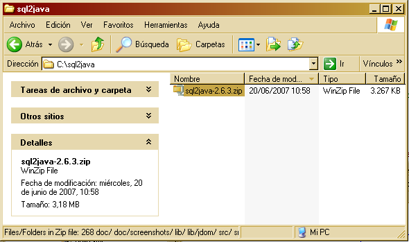
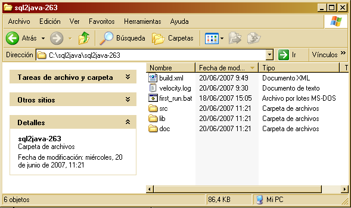
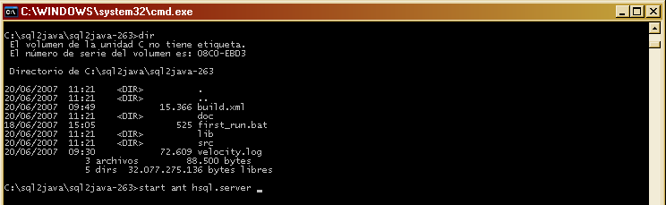
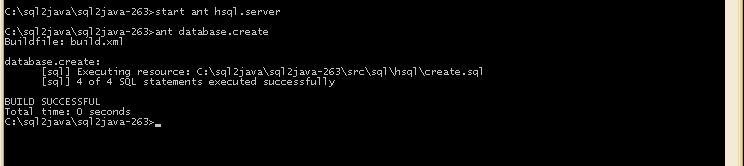
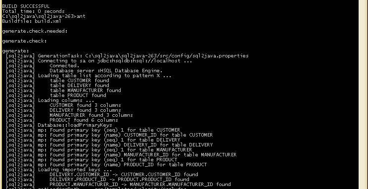
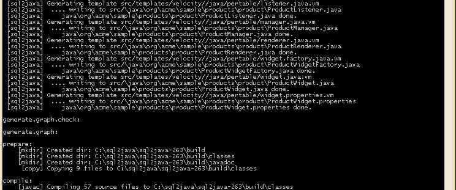
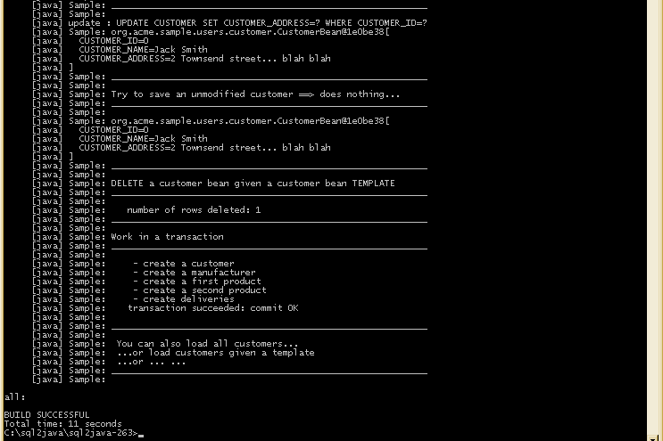
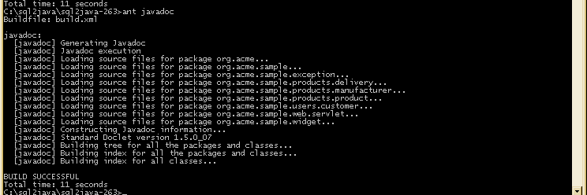
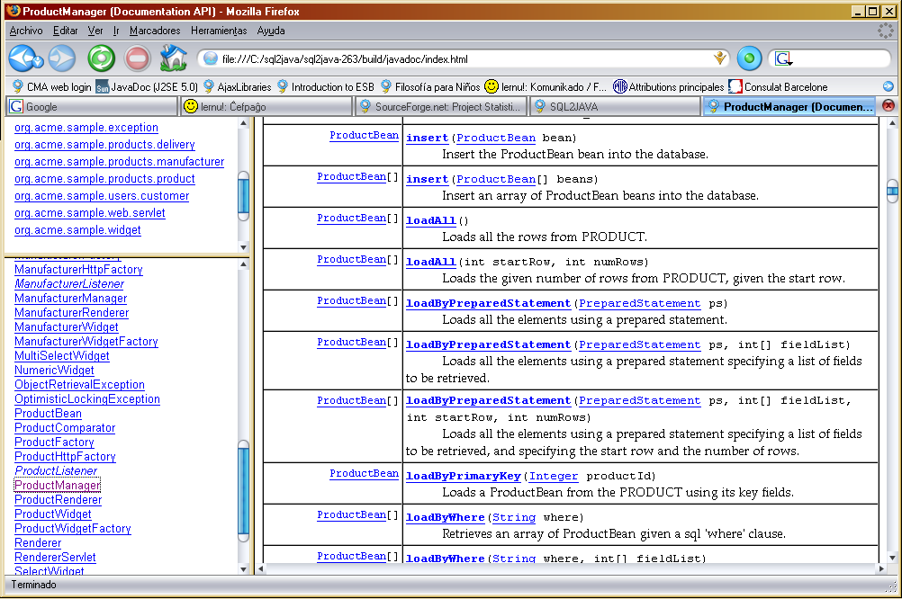

The SQL2JAVA example can be run in less than five minutes. It generates a DB layer API to access a sample hsql database schema, Javadoc, and more!
We assume Java and Ant have already been installed.
| Distribution file |  |
| Unzip it ... |  |
| You have jdk installed, and ant installed, so start the hsql server |  |
| Your database server is now up and running |  |
| Well let's create the sample database schema |  |
| Type ant, looks like it is analyzing our database schema |  |
| ... and now generating stuffs |  |
| ... and now running the sample application |  |
| Why not generating the javadoc |  |
| ... and reading it afterwards ... |  |
This product uses Velocity which license is available here http://www.apache.org/licenses/LICENSE-2.0
NOTE: For the example, we ship hsqldb in a binary form, but you do not need it to use sql2java against another database.
Manditory Legal Stuff:
This product includes Hypersonic SQL.
ORIGINAL LICENSE (a.k.a. "hypersonic_lic.txt")
For content, code, and products originally developed by Thomas Mueller and the Hypersonic SQL Group:
Copyright (c) 1995-2000 by the Hypersonic SQL Group. All rights reserved.
$Id: index.html,v 1.18 2008/03/19 12:12:13 kameleono Exp $